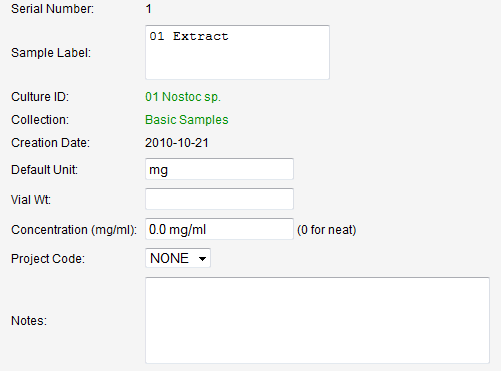

At the heart of the data is the sample that is evaluated biologically and chemically. In a natural product drug discovery effort, there are three main classes of samples: crude extracts, fractions, and pure compounds. From a hierarchical standpoint, extracts are the children of harvested biomass and are the parent of fractions, via a chemical separation. Fractions in turn can be the parent of further fractions as well as purified compounds.
Sample collections, either physical or logical, can be defined to help organize samples and these sample collections can be grouped into sample libraries.
In the case of all three classes, daughter samples can be created for storage libraries or sample submission for biological evaluation. A single sample class was defined that would contain common information for all samples, e.g. location, label, date, and amount. Specific attributes and relationships are used to define the sample as a crude extract, fraction, or pure compound. The source material and resulting fractions of a chemical separation can also linked to the separation record, which stores data relating to the chromatographic parameters. All samples can have transaction histories, which links daughter samples and allows a view of the full history of any particular sample.Sample records can be accessed from a variety of locations within the CYANOS web interface. The primary methods to access samples are via the Samples sections found on a strain's or sample collection's data page. Sample collections can be access via the menu option Samples > Browse. Use the pull down field to select the desired sample collection. Please note that sample collections are grouped by library.
The Samples section from either the strain or sample collection data page will have a layout similar or identical to the figure shown below. Select a sample by clicking on the sample name displayed in the Sample column.
The default sample view only allows one to view the attributes of the sample. One can open a form to edit the attributes by clicking on the Edit Values button. An example form is displayed below.
Depending on the type of sample; i.e. extract, fraction, or compound; additional attributes may be available. However, all samples should contain the attributes shown here. Attributes in bold can be modified through this form.
| Sample ID | A unique serial number generated by CYANOS. |
| Sample Label | Descriptive name/label for the sample |
| Culture ID | The strain associated with the sample. |
| Collection | The sample collection |
| Creation Date | The date the sample was created. |
| Default Unit | The default unit of measure for transactions, e.g. mg or uL. |
| Vial Wt | The tare weight of the vial. Note: this field is provided solely as a convenience and is not used by CYANOS. |
| Concentration | The concentration of the sample, in mg/mL. If the unit is dry or neat, the concentration should be 0. |
| Project | Project code to associate with the sample record. |
| Notes | Any notes or details to include with the sample. |
Click the Update button to update the database record.
Return to table of contentsThe form to add sample collections can be accessed by the menu option Samples > Add a New Collection. This will open the Add Sample Collection form.
Use the form to set the characters of the new sample collection.
| Collection ID | Globally unique alphanumeric ID for the new collection. |
| Library | Library membership for the collection. Use the NEW LIBRARY -> option to specifiy a new library in the input field adjacent to the pull down field. |
| Name | Descriptive name/label for the sample collection |
| Default Type | Default type of sample, i.e. extract, fraction, or compound, that will be contained in the collection. Note: this field is not currently used by CYANOS and it is possible to mix sample types within a single collection. |
| Size | The width and length of the collection, if a box, or select Unformatted list to create a virtual collection of samples that lack a specific location. |
| Notes | Any notes or details to include with the sample collection data. |
Once all the data is entered into the form, click the Add button to add the sample collection details to database.
Return to table of contentsAs mentioned above, sample collections can be access via the menu option Samples > Browse. Use the pull down field to select the desired sample collection. Please note that sample collections are grouped by library. The sample collection data page allows one to view samples included in this collection. The sample collection data page also allows one to modify the detail of the sample collection. An example of this form is shown below.

The attributes that can be modified are as follows:
| Library | Library membership for the collection. Use the NEW LIBRARY -> option to specifiy a new library in the input field adjacent to the pull down field. |
| Name | Descriptive name/label for the sample collection |
| Size | The width and length of the collection, if a box, or use the dimensions 0x0 for a virtual collection of samples that lack a specific location. |
| Notes | Any notes or details to include with the sample collection data. |
Click the Update button to update the database record.
Return to table of contentsIn addition to basic attributes, each sample will also have an associated transaction history. An initial balance is created when the sample is created and subsequent withdraws are included in the history. The following is an example of the transaction history from an extract.
| Date: | The date the extract was created. |
| Collection: | The sample collection |
| Sample Label: | Descriptive name/label for the extract |
| Vial Wt: | The tare weight of the vial. Note: this field is provided solely as a convenience and is not used by CYANOS. |
| Amount: | The amount of the extract. Use units, e.g. 234.1 mg or 3.5 g, to avoid ambiguity problems. |
| Project: | Project code to associate with the sample record. |
| Extraction protocol: | The desired protocol template to use for setting the extract type and solvent.
The value "NONE" will not set the extract type and solvent. In any case, the extract type and solvent can be modified later via the sample's data page. |
| Sample Notes: | Any notes or details to include with the extract record. |
| Transaction Notes: | Any notes or details to include with the initial transaction record for the sample. |
Once the extract record is created, it should appear on the harvest's data page. An example is shown below.
First, prepare the spread containing the fraction data. Information about the separation, e.g. chromatographic phases, can be added later. The spreadsheet of fraction data should have the following format. Please note that items in italics are optional.
| Sample ID | Fraction Number | Amount | Destination | Destination Location | Label | Notes |
|---|---|---|---|---|---|---|
For source materials, cells in the Sample ID column should contain the serial number (a.k.a. sample ID) of that sample. The sample serial numbers can be found on the sample's data page. Cells in the Fraction Number column should contain the letter "S". Cells in the Amount column should contain the amount of material taken from the sample for the separation. The value can be with or without a unit, e.g. mg. The Fraction Upload form allows one to specifiy a default unit if one is not specified in the spreadsheet. Note: this amount must be a POSITIVE number. CYANOS considers that this amount is the amount WITHDRAWN from the source sample. For source materials, CYANOS will ignore all other columns.
For fractions, these cell in the Sample ID should be empty, as the database will generate new sample records for each fraction. The Fraction Number should contain an integer number; i.e. 1, 2, 3, etc.; for each fraction. Note: fraction numbers CANNOT be repeated within a separation. Cells in the Amount column should contain the amount of material collected for each fraction. All other columns in the spreadsheet are optional, however can be useful in managing the fraction records. The Destination and Destination Location cells can contain information about the sample collection and location for each fraction. The Destination field should contain the collection ID of the sample collection. The Label cells can contain a descriptive label for each sample. The Fraction Upload form does provide two methods to automatically generate labels for each fraction. The Notes column can contain notes to be added to each fraction record.
The following is an example of a fraction upload spreadsheet. The first row details the source material. The next three rows detail the fractions produced by this separation.
| Sample ID | Fraction Number | Amount | Destination | Destination Location | Label | Notes |
|---|---|---|---|---|---|---|
| 1245 | S | 324.5 | ||||
| 1 | 124.5 | CY765 FR1 | gcFracs | A1 | ||
| 2 | 36.5 | CY765 FR2 | gcFracs | B1 | ||
| 3 | 20.5 | CY765 FR3 | gcFracs | C1 |
The selection fields Sample ID, FR Number, Amount, Destination Collection ID, Destination Location, Label, and Notes are used to designate the proper columns in the spreadsheet.
The other fields in the parser form are as follows.
| Fractionation Protocol: | Stored fractionation protocol template to be used to set the stationary phase, mobile phase, method, and tag of the new separation record. Note: if a protocol is set, it will override the information inputted in the stationary phase, mobile phase, method, and tag fields of the form. |
| Stationary Phase: | Stationary phase of the separation |
| Mobile Phase: | Mobile phase of the separation |
| Method: | Method used for the separation |
| Tag: | Descriptive tag for the separation. Can be unique or shared to allow one to group separation records. |
| Date: | The date the separation was performed. |
Library sample records can be used to keep track of daugher samples of extracts and fraction. For example, if a portion of an extract is stored in a sample library for bioassays, a library sample record can be created to track these sample libraries and the material stored in them.
Library sample records can be created via the Upload Sample Library Data form. This form can be accessed via the Samples > Upload Data menu item. Then select Upload Sample Library Information from the Sample Upload page. The spreadsheet used by this upload form should have the following format. Please note that items in italics are optional.
| Source | Date | Destination Collection | Destination Location | Amount | Concentration | Label | Notes | Project Code |
|---|---|---|---|---|---|---|---|---|
The Source information can be a single cell containing the sample serial number (sample ID) of the parent sample or two cells containing the collection ID of the sample collection and the location of the source sample within that collection. The Date column should contain the date each daughter sample was created and the Destination Collection should contain the collection ID of the destination of the daughter sample. All other columns are optional.
The Destination Location can contain the location of the daughter sample within the collection and the Amount should contain the initial amount of the child sample. The upload form allows one to set a static amount for all samples, if the same amount was moved for each parent sample. The Concentration can contain the concentration of the sample, if neat/dry use 0. The default unit for concentration values is mg/mL. Note: the upload function will consider the value for Amount as the initial amount in the child sample and will calculate the amount to withdraw from the parent sample based upon the Concentrations of both the parent and child sample. The following are examples of how CYANOS would function in each case.
Other upload values can include the Label of the child sample, Notes to include with the record of the child sample, and the Project Code to associate with the child sample.
Return to table of contentsRequired permissions listed in this table denote the role and permission bit, in parenthesis. Actions in italics utilize global level permissions only.
| Action | Required Permission |
| Add a new sample collection | sample(Create) |
| Modify a sample collection | sample(Write) |
| Add a new sample (extract, fraction, or compound) | sample(Create) |
| Modify a sample (extract, fraction, or compound) | sample(Write) |
| Add a new separation | sample(Create) |
| Modify a separation | sample(Write) |